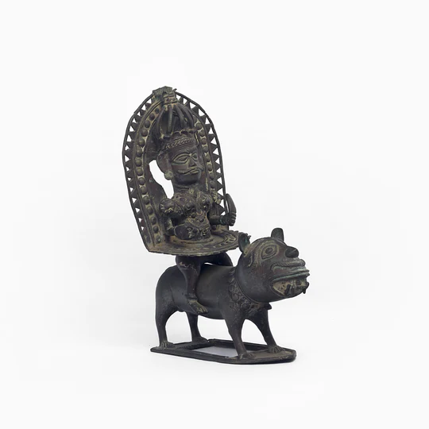

Your one-stop solution for bidding
|
This vintage idol of a deity riding a Tiger is a Pilichamundi. Riding a tiger, the deity here personifies the spirit of a Pilichamundi. The deity is shown wearing a finely carved head gear, very elaborate Ani (across his waist and torso) and Gaggara (sacred anklets). The tiger depicted with a big head is a Pilichamundi. Pilicahmundi is the divine spirit of a tiger worshipped as a part of Bhuta Kola. Pili in Tulu means a tiger and this daiva is of totemic origin worshipped for protection of crops and cattle against tigers. There are priests who act as oracles or impersonators for the conveyance of the commands of these Bhutas. Bhuta Kolas from feudal times have served as a platform for delivering justice where family disputes and political disputes are referred to the spirits for mediation and deliverance of justice. Possession, Trance and Dialogue by the impersonator with the villagers/ devotees are the three main parts of such ceremonies. The priests or impersonators wore very elaborate costumes and paraphernalia during these cult rituals. Bhuta masks and idols are the most revered and popular of these which were worshipped in the shrines (Sthaana) as representations of these spirits. |
 | |
|
Current Bidding Price: Rs. 16450 No. of Bids: 19 Time Left: 11h 35m |